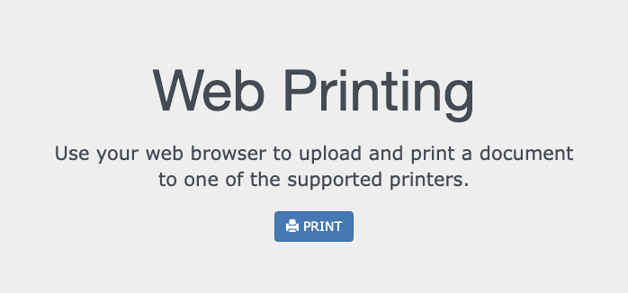

Follow these steps to print from a personal device.
To print wirelessly, you need to be connected to the UC Davis WiFi network. For help connecting, refer to the contact information listed for UC Davis IT in Getting Extra Assistance.
Download the file you wish to print. You will not be able to access Google Drive, so make sure the document is downloaded to your device.
Go to https://campusprinting.ucdavis.edu
Figure 1. Campus Printing Homepage
Click the blue PRINT icon.
Choose a printer:
Select Library Black and White
Or Library Color
Fill out 'Step 2 - Document Information' and click CHOOSE FILE to upload the file downloaded previously.
Specify number of copies and page range (if applicable).
In the bottom field, enter your ID:
If a student, enter your Kerberos username. This should be a series of letters, not numbers.
If faculty or staff, enter your ID number.
If a visitor, enter your Repro Graphics Card ID number.
In 'Step 3 - Print Options,' specify paper dimensions, duplex, and orientation (if applicable). Click CONTINUE when done.
Note: Take note of the Job ID number; you may need it to find your file in the printer.
Wait for the word Complete to appear with a green check mark.
Your document has now been uploaded into the printing queue. To prompt the printing of your document, you will need to swipe your card through an Equifax console.